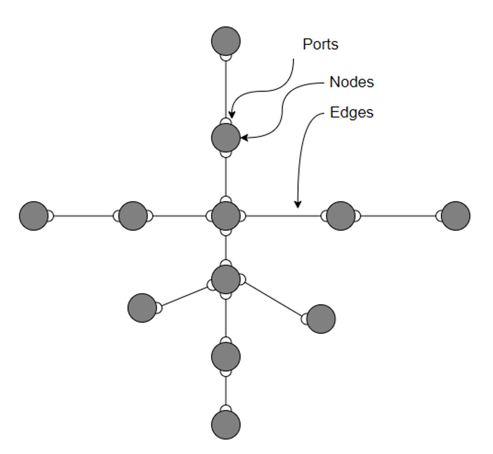

User Guide
Design Philosophy
Echo models multi-commodity energy systems as networks comprised of edges, ports, and nodes. Nodes represent physical assets of the energy network (at different levels of aggregation) and logical interconnection points. Each Node has at least one Port. Port represents the flow of a single commodity into or out of a Node. Nodes that have multiple Ports also define a Transformation of the commodity between their Ports. Edges represents physical flows of a single commodity between two network Nodes (assets). Ports also represent the connection of an Edge to a Node.
